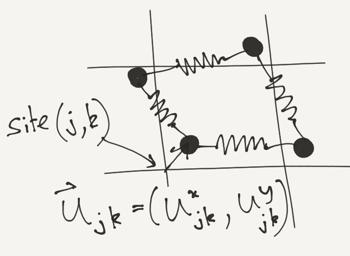
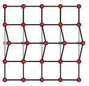

Problem Set 1
1 Fermions and Bosons at Finite Temperature
At finite temperature \(T\) and chemical potential \(\mu\) we can describe a system of free particles in terms of the \(N\)-particle density matrix.
\[ \rho = \frac{1}{\mathcal{Z}}\sum_{\{N_\alpha\}} \exp\left(-\frac{1}{k_\text{B}T}\sum_\alpha N_\alpha [E_\alpha -\mu]\right)\lvert{\Psi^{S/A}_{\alpha_{1}\alpha_{2}\cdots\alpha_{N}}}\rangle\langle{\Psi^{S/A}_{\alpha_{1}\alpha_{2}\cdots\alpha_{N}}}\rvert \]
where the sum is over the occupation number of each state, and \(\mathcal{Z}\) is a normalization factor (the grand canonical partition function). Find the single particle density matrix \(g(x,y)\) for bosons and fermions. Hint: express \(g(x,y)\) in terms of occupation numbers and then average.
2 Sutherland Model
[This one’s a bit hard! In the lectures we talked about verifying that the explicit ground state Slater determinant is an eigenstate of the free particle Hamiltonian. DO THIS FIRST!]
Show that
\[ \Psi(x_1,\ldots, x_N)= \prod_{j<k}\left(\sin\left[\frac{\pi(x_j-x_k)}{L}\right]\right)^\lambda \]
is an eigenstate – in fact it’s the ground state – of the Sutherland model
\[ H = -\frac{1}{2}\sum_{j=1}^N \frac{\partial^2}{\partial x_j^2} + \frac{\lambda(\lambda-1)\pi^2}{L^2}\sum_{j<k} \sin^{-2}\left(\frac{\pi[x_j-x_k]}{L}\right). \]
with periodic boundary conditions \(\Psi(x_1,\ldots x_j+L,\ldots x_M)=\Psi(x_1,\ldots x_j,\ldots x_M)\). Find the energy.
[If you stick with the \(x_j\) variables, you’ll need the identity
\[ \label{2nd_quant_cotident} \cot(x-y)\cot(y-z)+\cot(y-z)\cot(z-x)+\cot(z-x)\cot(x-y)=1. \nonumber \]
Alternatively, work with the complex variables \(z_j=e^{2\pi x_j/L}\)]
3 Density Matrix of the Filled LLL of Fermions
In the lecture we found the density of lowest Landau level filled with \(N\) fermions
\[ \rho_1(z,\bar z) = \frac{e^{-|z|^2/2}}{2\pi}\sum_{n=0}^{N-1} \frac{\left|z\right|^{2n}}{2^n n!} = \frac{1}{2\pi} \frac{\Gamma(N,|z|^2/2)}{(N-1)!}. \label{many_LLLdensity} \]
Find the density matrix, and investigate its behaviour on the edge of the droplet (where \(\lvert{z}\rvert\sim \sqrt{2N}\)) in the large \(N\) limit.
4 Holes in the \(\nu=1\) State
The harmonic potential, projected into the LLL, has the form
\[ V_\text{harm}\longrightarrow v\partial_z z = v\left(1+z \partial_z\right). \label{many_HarmonicProject} \]
Show how to resolve the quasihole state
\[ \Psi_\text{hole}(z_1,\ldots, z_N|Z) = \prod_j (Z-z_j)\Psi_{m=1}(z_1,\ldots, z_N). \]
into a superposition of eigenstates of \(V_\text{harm}\), describing the occupation numbers of these eigenstates. [Try starting with two particles!]
5 Normal Modes in General
Consider the more general Hamiltonian described by an even potential \(V(x)\)
\[ H = \sum_{j=1}^N \frac{p_j^2}{2m} + \sum_{j<k} V(x_j-x_k). \]
Impose periodic boundary conditions (\(V(x+L)=V(x)\)) and show that \(x_j=jL/N\) (a regular arrangement of masses) is an equilibrium state.
Expand \(H\) to quadratic order in the deviations from equilibrium, find the normal modes, and express the Hamiltonian in terms of oscillator variables \(a^{\vphantom{\dagger}}_n\), \(a^\dagger_n\).
Expand to cubic order and express the cubic parts in terms of oscillator variables. If we considered this part of the Hamiltonian as a perturbation in time dependent perturbation theory, what transitions could occur?
6 Fluctuations in a Finite Chain
Investigate the behaviour of \(\langle{0}\rvert u_j^2\lvert{0}\rangle\) in a chain of length \(N\). What happens as \(N\to\infty\)?
7 The 2D Elastic Solid
Solve the 2D harmonic solid, defined by

NOTE: You will need to assume that the equilibrium length of the springs is zero. If not, your solid will not be ‘solid’, in that even infinitely stiff bars connecting the atoms will not give a rigid structure because they are free to shear layer by layer:

8 Thermal Displacement in 2D
Show that the ground state expectation \(\langle{0}\rvert \mathbf{u}_{j,k}^2\lvert{0}\rangle\) is finite in 2D, but the finite temperature expectation diverges as \(N\to\infty\).
9 Anisotropic Heisenberg Model
Discuss the spin wave spectrum of the aniotropic Heisenberg chain
\[ H = \sum_j\left[J_\parallel s^z_j s^z_{j+1} + \frac{J_\perp}{2}\left(s^+_js^-_{j+1}+s^-_js^+_{j+1}\right)\right], \]
for both the ferromagnetic \(J<0\) and antiferromagnetic \(J>0\) cases.
10 From Schwinger Bosons to Holstein–Primakoff
If we have \(N\) bosons with \(\left[a^{\vphantom{\dagger}}_j,a^\dagger_k\right]=\delta_{jk}\), show that \[ \left[\hat A, \hat B\right] = \widehat{\left[A,B\right]} \] where \(\hat A = a^\dagger_j A_{jk} a^{\vphantom{\dagger}}_k\) (summation implied). The commutation relations are ‘copied’ to the second quantized operators (or if you prefer, they form a representation of the Lie algebra of the matrices). This is apparently called the Jordan map.
Applying this to the operators \(\frac{\boldsymbol{\sigma}}{2}\) gives, with two bosons \(a^{\vphantom{\dagger}}\) and \(b^{\vphantom{\dagger}}\) \[ \begin{align} S^x &= \frac{1}{2}\left(a^\dagger b^{\vphantom{\dagger}}+b^\dagger a^{\vphantom{\dagger}}\right)\nonumber\\ S^y &= \frac{i}{2}\left(-a^\dagger b^{\vphantom{\dagger}}+b^\dagger a^{\vphantom{\dagger}}\right)\nonumber\\ S^z &= \frac{1}{2}\left(a^\dagger a^{\vphantom{\dagger}}-b^\dagger b^{\vphantom{\dagger}}\right). \end{align} \tag{1}\] This is a method for representing spins called Schwinger bosons. Identify which states \(\lvert{N_a}\rangle_a\lvert{N_b}\rangle_b\) of the oscillators correspond to the states of a spin \(s\).
By considering the action of Equation 1 on the oscillator states corresponding to spin \(s\), show that one can write their effect in terms of a single oscillator, and that this gives the Holstein–Primakoff representation.
11 Spin Waves from Bogoliubov Transformation
After our \(\pi\) rotation of every other spin, the Hamiltonian for the antiferromagnetic chain is \[ \begin{align} H = -J \sum_{j=1}^N \left[s^x_j s^x_{j+1} - s^y_j s^y_{j+1} + s^z_j s^z_{j+1}\right]. \end{align} \] Substitute directly the Holstein–Primakoff representation in terms of \(a^{\vphantom{\dagger}}_j\) and \(a^\dagger_j\), without introducing \(x_j\) and \(p_j\). You should find terms of the form \(a^{\vphantom{\dagger}}_ja^{\vphantom{\dagger}}_{j+1}\) and \(a^\dagger_ja^\dagger_{j+1}\), among others.
Write the Hamiltonian in terms of the Fourier representation \[ \begin{align} a^{\vphantom{\dagger}}_j = \frac{1}{\sqrt{N}}\sum_n e^{i\eta_n j} a^{\vphantom{\dagger}}_j,\quad a^\dagger_j = \frac{1}{\sqrt{N}}\sum_n e^{-i\eta_n j} a^\dagger_n. \end{align} \] Your answer should involve terms with \(a^{\vphantom{\dagger}}_na^{\vphantom{\dagger}}_{-n}\) and \(a^\dagger_{n}a^\dagger_{-n}\).
Check that the Bogoliubov transformation \[ \begin{align} a^\dagger_n \longrightarrow \cosh\theta_n a^\dagger_n +\sinh\theta_n a^{\vphantom{\dagger}}_{-n}\\ a^{\vphantom{\dagger}}_n \longrightarrow \cosh\theta_n a^{\vphantom{\dagger}}_n +\sinh\theta_n a^\dagger_{-n} \end{align} \] preserves the commutation relations of the bosons. Choose \(\theta_n\) to eliminate the \(a^{\vphantom{\dagger}}_na^{\vphantom{\dagger}}_{-n}\) and \(a^\dagger_{n}a^\dagger_{-n}\) terms from the Hamiltonian. Your answer should describe a system of bosons with the dispersion we found in the lecture.